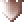
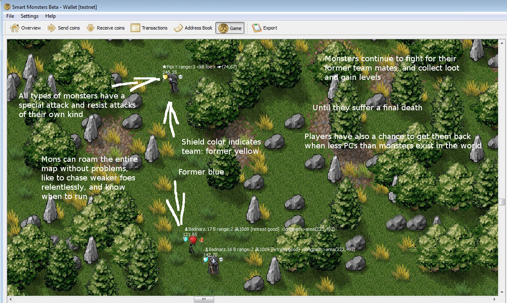

Weapons
Player characters start out with a dagger and can buy one additional weapon by running over the tile of a merchant NPC.
Characters use their weapons automatically, and will never fumble or miss. Weapon effects can be resisted, in this case they do no damage. If not resisted, all weapons are immediately lethal.
| Icon | Damage Type | Range(***) | Strength(**) | Affected tiles | Min. clevel to use | |
|---|---|---|---|---|---|---|
| Staff of Poison Cloud | poison | clevel | clevel-distance | several | 2 | |
| Staff of Fire Balls | fire | clevel | clevel | 1 | 2 | |
| Staff of the Reaper | normal | clevel | clevel | several | 2 | |
| Dagger (default weapon) | normal | 1 | 1 | several | 1 | |
| Arming Sword |  | normal | 1 | min(2,clevel) | several | 2 |
| Estoc | normal | 1 | clevel | several | 2 | |
| Crossbow |  | normal | 2 | 1 | 1 | 1 |
| Arbalest | normal | 3 | 1 | 1 | 2 | |
| Staff of Chain Lightning | lightning | clevel | 1 | 1 (*) | 2 |
(*) resisted if target is wearing plate mail, but otherwise everyone on adjacent tiles (of the target) get zapped too.
(**) maximum 3
(***) maximum 7
Items
Player characters can have equipped items that determine their combat abilities. Equipment can be bought by running over the tile of a merchant NPC.
Armor
All armor types resist damage if the wearer's character level is greater than the attack strength AND attack strength is less than 3. As a rule of thumb, attack strength is never higher than the attacker's character level.
| Buff Coat |
Effective against normal damage, but only if attack strength is 1, and not against lightning, poison and fire. No range penalty when using staves. | |
| Linen Body Armor |  |
Effective against normal damage but not against lightning, poison and fire. -1 range penalty when using staves. |
| Scale Mail |
Effective against normal damage and poison but not against lightning and fire. -1 range penalty when using staves. | |
| Splinted Mail |
Effective against normal damage, poison and fire but not against lightning. -2 range penalty when using staves. | |
| Plate Mail |
Effective against all types of damage. -2 range penalty when using staves. |
Amulets
| Amulet of Word of Recall | teleport to base, if failing morale check for 25 consecutive blocks (being chased by strong monster) | |
| Amulet of Life Saving | teleport to base *instead* of death this will destroy the amulet | |
| Amulet of Regeneration | If the wearer is converted into a monster, it will slowly regenerate and become a normal PC again, (this process is halted when less than 1/3 of all characters are monsters) |
Rings
| Ring of Word of Recall | teleport to base, if failing morale check for 25 consecutive blocks (being chased by strong monster) | |
| Ring of Immortality | teleport to base *instead* of death the ring is then automatically rebought, without discount |
AI + spell packages (free items)
| Book of Conquest | Standard setting for passing/failing morale check | |
| Book of Survival | Less overconfidence. Run away to fight another day | |
| Book of Resting | like Book of Survival, additionally recall to base if no order for new round was given | |
| Book of Mark and Recall | like Book of Resting, additionally: Memorize where you have been (the area). When order for new round was given, teleport there, then walk to ordered target area. (for teleportation, the area's marker flag must be same color, or white) |
Monsters
Sometimes, dead PCs get a second life as monster. Monsters are always AI controlled and retain loyality to their color.
Mons can carry looted coins just like players and become stronger when they level up. They can enter and leave the center safe zone freely, but never deign to buy something from the merchant NPCs there.
If a monster finds a heart, a normal player character is created.
Natural attack spells
| Redhead | equivalent to Staff of Fire Balls |
| Zombie | equivalent to Staff of Poison Cloud |
| Reaper | equivalent to Staff of the Reaper |

Summon Champion
Summoning can be done from every position on the map. (press "Summon Champion" and then "Go" button)
The stongest (not yet summoned) monster of same color will get
- the same Mark and Recall point (if any) and
- the same ordered target area for next game round
as the player character, thus joining them as fast as possible.
A Mark and Recall point is not required but recommended, as monsters are easily distracted. If no ordered target area exists, the monster's current favorite area is used ("Stay where you are").
Balance between colors and between players and monsters
The game will resurrect dead hunters as merchant NPC or monster
- if the dead hunter was a member of the weakest color team
- or the dead hunter was not member of the strongest team and monsters score less than hunters
- or monsters are outnumbered by hunters 2:1, OR they have less than half the hunter's combat strength. (*)
(*) In this case, AI of every character will be overconfident in combat ("Berzerk rule") to force the generation of new monsters. This is high risk, high reward. Players can still choose to stay home at their base.
(*) The game estimates the combat strength by characters level, 1 point for a level 1 character, 5 points for level 2, a level 3 scores 25 points and so on.
If less characters are on map than target value, hearts will spawn, like in old Huntercoin times. In case of more characters than target value, the spawn rate is reduced by 90%. Running over a tile with a heart creates a free character with no coins locked ("heart soldier").
Upkeep and Survival Points
Player characters need 1 ration per round to survive. Rations are automatically bought and delivered. Starving players are logged out and refunded.
Survival point (SP) is the reward for surviving a round. SP per round = min (clevel, 5)
SP are required for the "Summon Champion" spell, to get the help of the strongest monster of same color in combat. After the spell has been used, the second strongest monster becomes the new champion and so on, while the required SP minimum goes lower with every block. This will give new and mid-level players a chance to win battles, even when the map is already crowded with high-leveled characters.
Drinkables (second AI package slot)
All drinkables are delivered once per round with the rations, at no extra cost. Players can send their characters "on vacation" so that they don't need any upkeep. This is limited to 50000 characters.
| Pazunia Sun Ale |  | if failing morale check and choosing an area to retreat, don't go back to area ordered by player |
| Pale Sweet Marrow | go back once (aka Potion of Duty) | |
| Red Pit Ichor |  | while the order is in effect, keep going back until the area is cleared
or you die or teleport out with Word of Recall (aka Potion of Fanatism) |
Character level requirements
| New character | 20 coins (paid from wallet) |
| clevel 2 | 100 coins (looted on map) |
| clevel 3 | 200 coins |
| clevel 4 | 400 coins |
| clevel 5 | 800 coins |
| clevel 6 | 1600 coins |
| clevel 7 | 3200 coins |
| clevel 8 | 6400 coins |
| clevel 9 | 12800 coins |
Stepping on spawn strip (in one of the corners) delevels the character back to lvl 1 and sends all coins to the wallet. Staying on spawn strip for 30 blocks liquidates the character (only possible when setting path to walk back and forth on the strip)